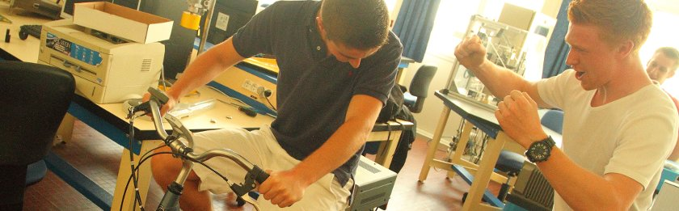
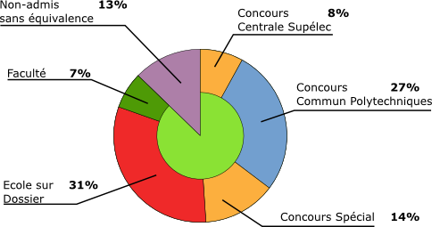

Témoignages d'anciens
- Guillaume intègre en 2013 l'ENSTA Bretagne
-
Élève au lycée Les Lombards en terminale, j’ai choisi de rejoindre la prépa un peu par hasard, j’ai été surpris par la bonne ambiance qui y régnait, contrairement à la réputation générale des CPGE. Il faut bien évidemment travailler mais l’entraide et les encouragements des profs aident à passer deux bonnes années. La prépa TSI est vraiment une opportunité pour un élève avec un bac technologique, elle n’est pas réservée à une élite et permet d’avoir accès à de bonnes écoles avec « seulement » un travail régulier et de la motivation. Pour ma part, j’ai ensuite choisi d’intégrer L’ENSTA Bretagne en filière militaire.
La CPGE du lycée Les Lombards m’a permis d’avoir accès à une école qui me plaît vraiment et en me laissant de bons souvenirs, n’hésitez donc plus
pour rejoindre la prépa.
- Damien intègre en 2012 l'École Centrale de Paris
-
Je n'ai jamais trop su ce que je voulais faire de mes études. C'est peut-être pour ça que je suis allé en STI. Suivre les autres.
Ce choix n'était pas le dernier, mais entre temps, j'ai un peu découvert les sciences, et voulant mener des études supérieures longues, parce que c'est le meilleur moyen de retarder le choix suivant, j'hésitais entre les humanités et les sciences, pour lesquelles la CPGE TSI est le meilleur moyen d'accès dans le supérieur, car adaptées. Et puis ça m'était suggéré. En plus, on ne se spécialise pas. J'y suis allé sans grande conviction, presque pour me forcer.
Et là, j'ai découvert une classe conviviale, de bons moments, et des enseignants soucieux non seulement de préparer aux concours, dont je me souciais peu au début, mais aussi d'inculquer le goût de leur matière. Et ce, chacun à leur manière. Et puis y'a l'internat qui ne coute pas grand-chose, et qu'il m'arrive même de regretter ! Oui, ça c'est le bon côté. Cette voie est chronophage, parfois éprouvante, mais pas pour rien.
Certains qualifient la prépa de mal nécessaire, avant le saint Graal de l'École. Mais j'ai aimé. Et les profs de Centrale avec leur CV grandiloquent ne sont pas forcément mieux. (Y'a plus de temps libre par contre.)
Après une progression au cours des deux ans, parce que je ne suis pas arrivé en étant dans les premiers de la classe, je me suis pris au jeu des concours, et j'ai intégré l'École Centrale Paris, sûrement une des trois meilleures écoles d'ingénieurs en France (Y'en a dans les deux-cents).
Les frais de scolarité ne sont certes pas négatifs comme certains, mais quand même faibles, et on peut faire plein de choses après, et pendant. J'ai encore du temps pour choisir.
- Matthieu intègre en 2012 l'École Polytechnique
-
Et dire que je voulais aller en BTS...
Je suis un peu arrivé par hasard en prépa, incité par mes professeurs et en me disant que je n’avais rien à y perdre, j’ai finalement découvert ce monde qui m’effrayait. Il n’en était rien, l’ambiance aux Lombards est géniale, notamment grâce aux professeurs très investis et agréables qui font mieux passer la quantité de travail demandée, je leur dois beaucoup. Après une bonne 1re année je me suis rendu compte que je pouvais intégrer une très bonne école. J’ai finalement intégré l’École Polytechnique...
Voici la preuve qu’il ne faut pas hésiter, osez la prépa TSI, c’est ce qui va vous arriver de mieux.
- Lucie intègre une L3 Génie Civil en 2011
-
Après un bac STI Génie Mécanique option Bois, je décide de m’orienter vers la prépa TSI. Malgré le rythme des
cours assez soutenu et la charge de travail demandée, je m’accroche grâce à la bonne entente entre les élèves et la proximité des professeurs et je parviens à passer en deuxième année.
A l’issue de la deuxième année je fais une demande d’entrée en licence. Aujourd’hui je suis en L3 Génie Civil,
Ingénierie du bâtiment à l’université de La Rochelle et je m’y plais beaucoup que ce soit pour les cours ou pour la
vie à l’extérieur.
Par la suite j’espère faire un Master et finaliser mon projet d’avenir.
- Clément intègre en 2006 l’ESIX Prod (Ecoles d’Ingénieurs de Cherbourg)
-
Je suis actuellement ingénieur chantier sur le nouveau réacteur nucléaire français, l'EPR à Flamanville. Les deux années de prépa que j'ai effectuées en TSI à Troyes ont été une véritable opportunité pour moi. Elles m'ont permis d'acquérir de solides bases scientifiques pour facilement m'adapter aux enseignements de l'école.
Ces deux années ont été un peu plus difficiles que les autres en raison de la charge de travail mais ce n'est rien étant donné la bonne ambiance qui règne avec des profs vraiment à l'écoute et disponibles.
- Jonathan intègre en 2005 l’École Centrale de Paris
-
Dire que la prépa des Lombards a changé ma vie pourrait paraître exagéré.
Pourtant, quand j'y regarde de plus près, ça y ressemble bien ! En effet, les portes qu'elle m'a ouvertes sont extraordinaires : aurais-je pu découvrir les joies de l'humanitaire, accéder à une grande école d'ingénieurs, obtenir un emploi si motivant (recherche industrielle en reconnaissance d'empreintes digitales), rencontrer des gens si passionnés et passionnants, si j'étais passé par un BTS ou un DUT ? Sans parler de la très bonne ambiance qui règne dans la prépa TSI des Lombards - unique et insolite pour une classe préparatoire -, et de l'équipe pédagogique, à la fois humaine, intéressante et compétente, qui y orchestre le tout.
Et dire que j'y étais allé dans un esprit de découverte, me disant que je n'avais rien à perdre ...Non seulement, vous n'avez rien à y perdre ; mais vous avez surtout tout à y gagner.
Débouchés après une TSI

87% de nos étudiants intègrent une formation avec leur passage en classes préparatoires.
Parmis ces élèves, 20% ont redoublé leur deuxième année soit par obligation, soit par choix (pour intégrer une école qui leur convenait plus )
- Concours Centrale-Supélec :
-
Offrant notamment des places dans les écoles d’ingénieur suivantes :
- École Polytechnique (Paris)
- ECP : École Centrale de Paris
- EC Lyon : École Centrale de Lyon
- EC Nantes : École Centrale de Nantes
- EC Marseille : École Centrale de Marseille
- EC Lille : École Centrale de Lille
- ENST : École Nationale Supérieure des Télécommunications de Paris
- ESE : École Supérieure d’Électricité (« Sup’élec »)
- ENSAM : École Nationale Supérieure des Arts et Métiers (Châlons-en-Champagne)
- ENSEA : École Nationale Supérieure de l’Électronique et de ses Applications (Cergy)
- IFMA : Institut Français de Mécanique Avancée (Clermont-Ferrand)
- ENTPE : École Nationale des Travaux Publics de l’Etat (Vaulx-en-Velin)
- EIC : École d'Ingénieurs de Cherbourg
- Concours Commun Polytechnique (CCP) :
-
Offrant notamment des places dans les écoles d’ingénieur suivantes :
- ENSICA Toulouse : École Nationale Supérieure d’Ingénieurs de Constructions Aéronautiques (Toulouse)
- ENSEEIHT Toulouse : École nationale supérieure d'électronique, d'électrotechnique, d'informatique, d'hydraulique et des télécommunications
- ENSMA Poitiers : École Nationale Supérieure de Mécanique et d’Aérotechnique
- ESM Saint-Cyr : École Spéciale Militaire de Saint-Cyr Coëtquidan
- ENSEIRB-MATMECA Bordeaux : École Nationale Supérieure d’Électronique,Informatique, Télécommunications, Mathématique et Mécanique
- ESIP Poitiers : École nationale supérieure d'ingénieurs de Poitiers
- ENSIB Bourges : École nationale supérieure d'ingénieurs de Bourges
- ENSICaen : École nationale supérieure d'ingénieurs de Caen
- CPE Lyon : École supérieure de chimie physique électronique de Lyon
- ENSIETA Brest : École Nationale Supérieure de Techniques Avancées de Bretagne
- ENSEM Nancy : École nationale supérieure d'électricité et de mécanique
- ENSEEG Grenoble: École Nationale Supérieure d’Électrochimie et d’Électrométallurgie
- SUPMECA Paris: Institut Supérieur de Mécanique de Paris
- SUPMECA Toulon: Institut Supérieur de Mécanique de Toulon
- ENSP Strasbourg : École Nationale Supérieure de Physique de Strasbourg
- ENSMM Besançon: École Nationale Supérieure de Mécanique et des Microtechniques
- ISIMA Clermont-Ferrand: Institut Sup. d’Informatique, de Modélisation et Applications
- EM Douai: École des Mines de Douai
- EM Nantes : École des Mines de Nantes
- ENSIAME Valenciennes
- Écoles sur concours spécifique :
-
- 3IL Limoges
- CESTI
- EIC Cherbourg
- EIPC
- ENAC : École Nationale de l’Aviation Civile (Toulouse)
- ENSIB Bourges
- ENSISA Mulhouse
- ENSTIB Epinal : École Nationale Supérieure des Techniques et Industries du Bois
- EPITA Paris
- ESA IGELEC
- ESIAL Nancy
- ESIEE Amiens
- Esigelec Rouen
- ESIX Cherbourg
- Iessa (ENAC)
- ISEP Paris
- ISIMA clermont
- ISIM Montpellier
- Saint Cyr
- École sur dossier :
-
- CESI Paris
- ecoles Alternance
- EHTP Maroc
- EMC Paris
- ENIM : École Nationale d'Ingénieurs de Metz
- ENIB : École Nationale d'Ingénieurs de Brest
- ENISE : École Nationale d'Ingénieurs de Saint Etienne
- ENIT : École Nationale d'Ingénieurs de Tarbes
- ENSIM : École Nationale Supérieure d'Ingénieurs de Mans
- ESB Nantes
- ESIEC Reims : École Supérieure d'Ingénieurs de l'Emballage et du Conditionnement
- ESIREM Dijon
- EUDIL Lille
- FIRST Dijon
- IMGP Nancy
- INSA Lyon : Institut National des Sciences Appliquées de Lyon
- INSA Strasbourg : Institut National des Sciences Appliquées de Strasbourg
- ISIV Valenciennes
- ITII Auxerre
- ITII Chalons
- ITII Reims
- Polytech Marseille
- UTC : Université de Technologie de Compiègne
- UTBM : Université de Technologie de Belfort-Montbéliard
- UTT : Université de Technologie de Troyes